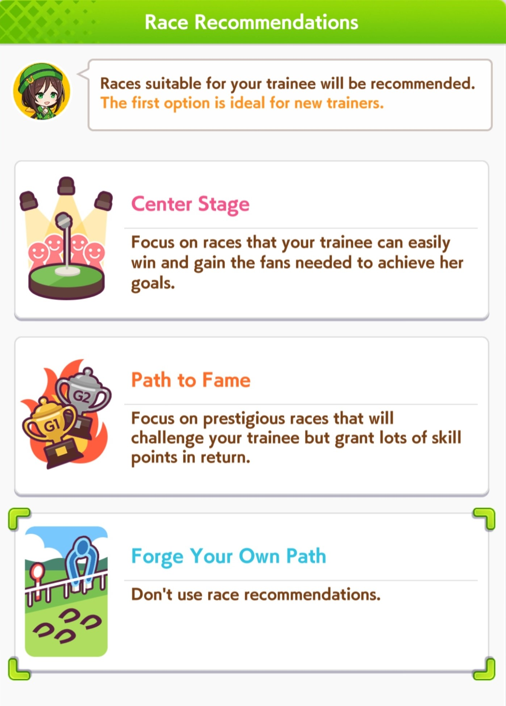

Hemos repasado ya todo lo importante hasta la fecha (una vez se actualize el juego se tendrá que actualizar la página) del juego y ahora toca la parte de fuego, el momento en el que si hicimos todo bien, todo rendirá frutos en las carreras.
Este es el momento en el que debes de analizar que hacer, antes de entrar a cualquier carrera tendrás una última oportunidad de comprar una habilidad en el apartado skills, dicho apartado ya lo repasamos así que pasamos directamente a las carreras y estrategias
Primero debes saber que puedes competir en carreras de que el juego te hará escoger, para ganar fans (center of stage), para ganar experiencia en cantidades (path to fame) o ir por tu cuenta con ambos tipos de carreras combinados (forge your own path), ya dependerá de lo que busques y quieras hacer.
En la interfaz encontrarás diferentes carreras en las que puedes competir antes de la mera mera (la carrera de objetivo/goal) y son de difernetes tipos, desde abiertas, G3, G2 y G1, las G1 son las mas desafiantes pero las que dan mas puntos de experiencia.
En el menú puedes ver algunas estrellas con aptitudes, las estrellas significan que afinidad tiene la carrera con tu Uma (si es buena en turf y en long, te lo marcará con una estrella).
Antes de entrar a cada carrera asegurate de checar tanto las stats de tu Uma y las características de la carrera donde competirás, las de carrera se ven en el (❗) de la interfaz, esta te mostrará todas las características de la carrera, que distancia es, en que suelo será, de que lado se correrá (puede ser de izquierda a derecha o al revés), el criterio (si tiene), las recompensas, etc.
Del mismo modo habrá un boton de que es una predicción de que tan bien le irá a tu Uma basandose en las stas, se marcan con 4 simbolos, ◎ significa que le irá excelente, 〇 que será contendiente fuerte, △ que es fuerte pero con detalles y ✖ que tendrá problemas, si tiene una - es que no fue evaluada, aunque no son siempre acertadas y de hecho no significan mucho, ya veremos porque pero en sintesis, no te preocupes tanto por estas.

Una vez dentro de la carrera, tendrás una interfaz donde al costado derecho tendrás todas las estadísticas, aptitudes, mood y estrategia de carrera, resultado de tu entrenamiento.
Hablemos de la , el único apartado que puedes cambiar, aquí se te mostrará en que estilo correrá tu Uma, si será End-closer, Late-starter, Pace-chaser o Front-runner, y aquí es donde empezamos a jugar con la estrategia y a analizar que nos conviene más, a priori podemos escoger la que se adecue a la aptitud de nuestra Uma, lo que tiene sentido pero ojo, no siempre puede ser así.
Si analizamos el perfil y estadísticas, todo lo que hicimos se verá reflejado aquí, el mood debe ser alto o de lo contrario tu Uma correrá con "menos ganas" y las stats nos darán pauta, porque aunque escojamos el estilo en base a la aptitud, si tenemos baja una stat crucial en ese estilo, no funcionará.
También depende la distancia, si es sprint, mile, medium o long, algunas stats tomarán más relevancia dependiendo, si es long, stamina debe ser alta, si es sprint puede ser media pero con velocidad y power altos.
Entonces si esto es así, ¿cómo puedo escoger las estrategia adecuada? Te lo explico.
Y es que todo se basa en las stats, veamos a esta Special-Week, tiene buenas stats, a simple vista su aptitud esta afinada para Pace-chaser o Late-surger, no obstante, ¿y si una de nuestras rivales en carrera tiene mas velocidad o power? ¿y si es una carrera de distancia medium? aquí las cosas se complican en saber que escoger, pero hay un truco llamado apostar.
Así es, si en carrera nuestras rivales tienen mas altas las stats que nosotros excepto en una, podemos ajustar la estrategia a esa stat que destaca, por ejemplo, las otras Umas tienen un poco mas alto la velocidad y power pero nosotros tenemos la stamina mas alta todas.
Cada estrategia demanda mas una stat que otra, End y Late exigen power y velocidad mas que nada, Pace y Front exige stamina y velocidad, por ende en este caso aunque la estrategia de front a priori no conviene porque tiene la aptitud en G, al tener mas stamina que las demás, puede hacer un milagro.
Lo más probable es que no gane la carrera, pero por lo menos logrará quedar en 3ra o 2da posición, si es posible (y lo he probado) porque justamente todo se lográ analizando las stats, si es una carrera medium, y tienes la stamina mas alta podrás ser competitivo aunque la aptitud no ayude, aunque claro, debes también cuidar la velocidad y power, que sean casi tan altas como en este caso.
Esto funciona cuando entrenaste más una stat que otrás, pero asegurate de que siempre las stats esten afinadas para la aptitud de tu Uma.
De ahí queda esperar a que de sus frutos la estrategia, aunque claro, puede y hayas escogido una que no cumplió con lo que esperabas, cuando fallas un objetivo el juego por día te da 3 oportunidades extra de volver a correr y escoger otra estrategia, además de subir el mood a great si lo tenias más bajo, dandote otra oportunidad con los relojes de alarma.
Ya si de plano no lo lograste bueno, almenos lo intentaste, sigue esforzandote, ya lo hemos dicho antes, esfuerzate, crea legados fuertes y lo lograrás pronto.


 | All rights reserved | Made with ❤︎.
| All rights reserved | Made with ❤︎.